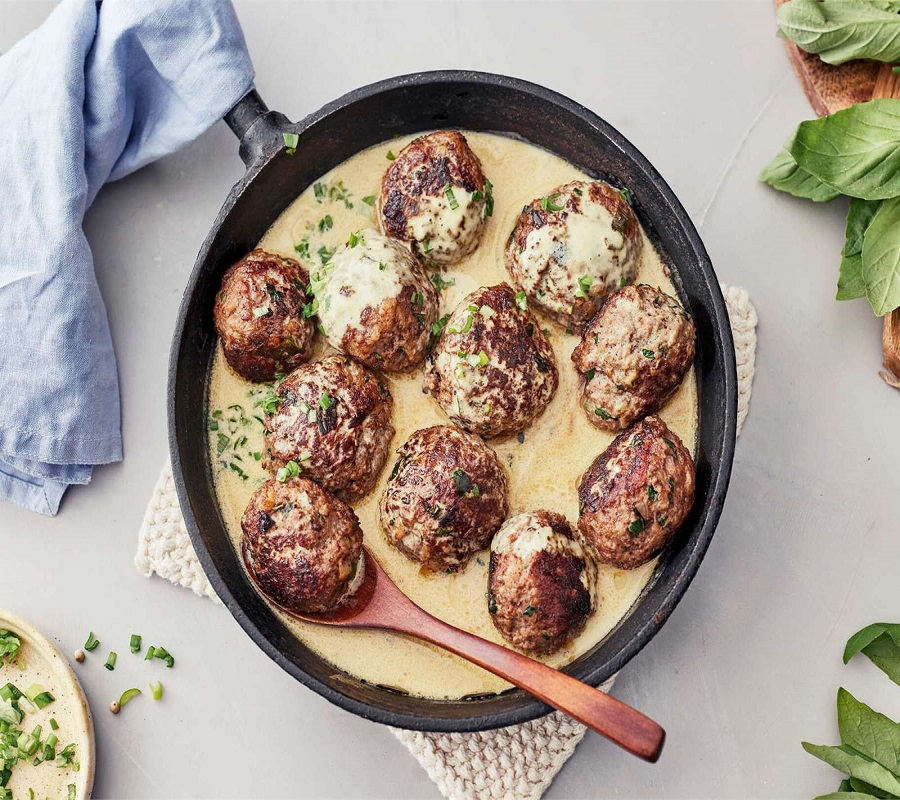
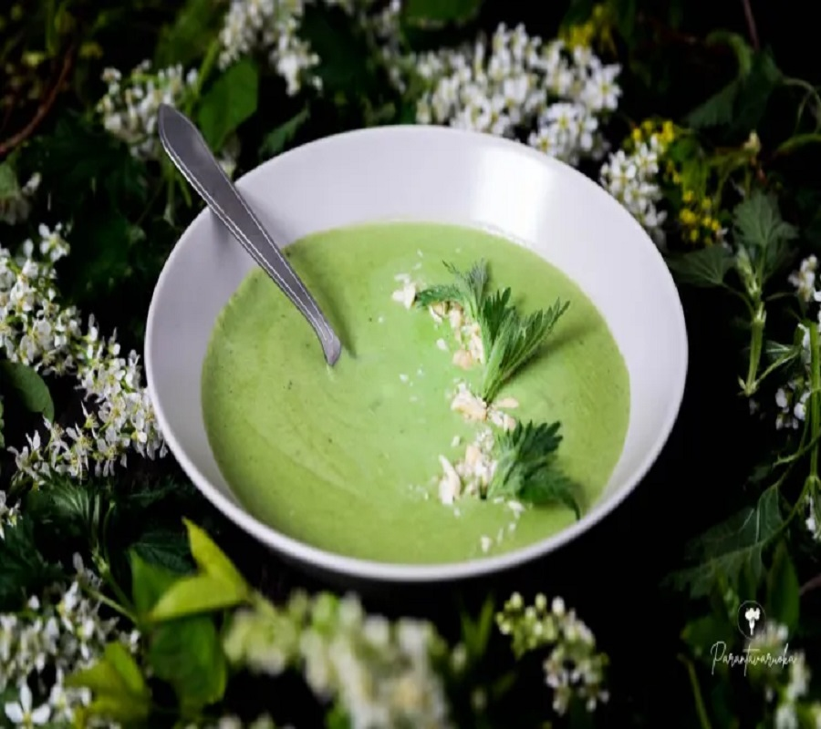
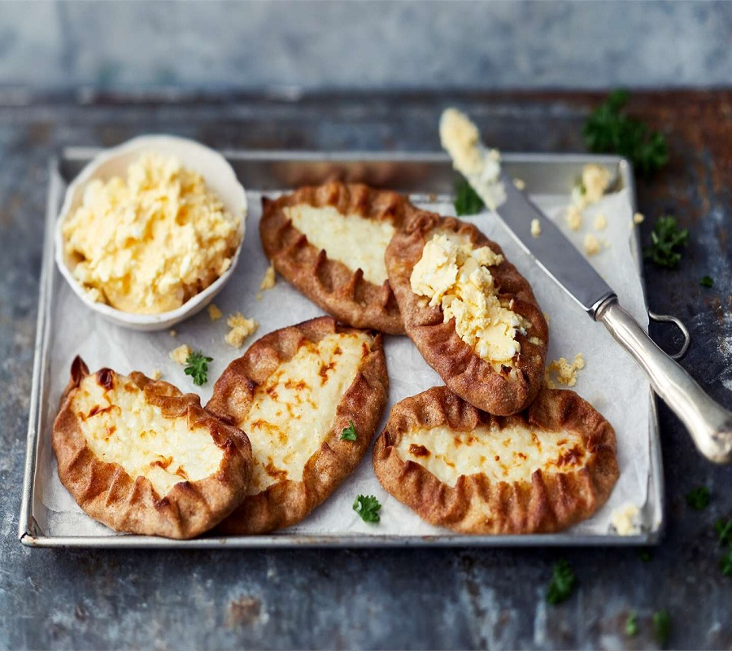
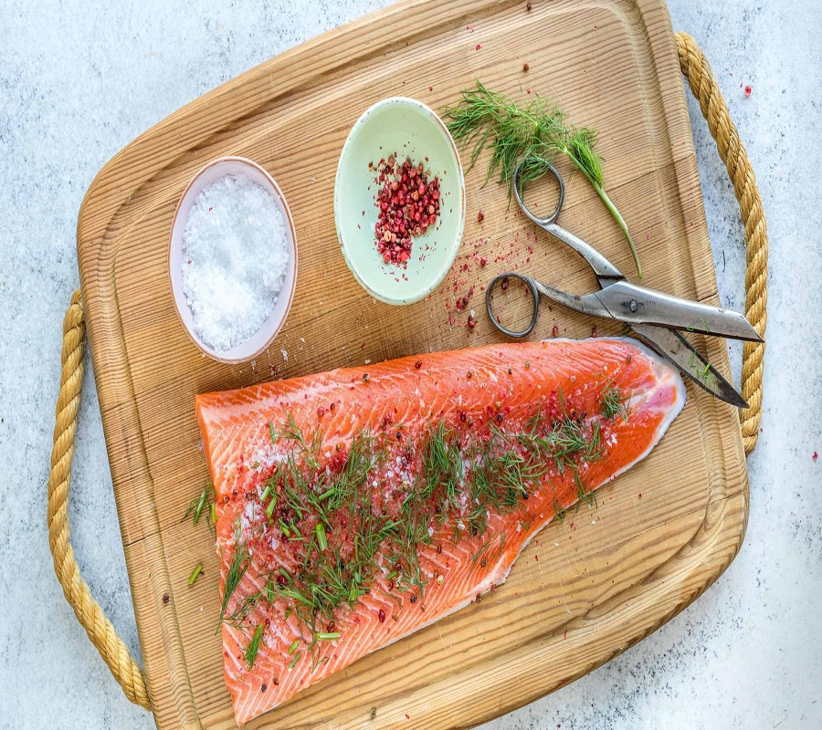
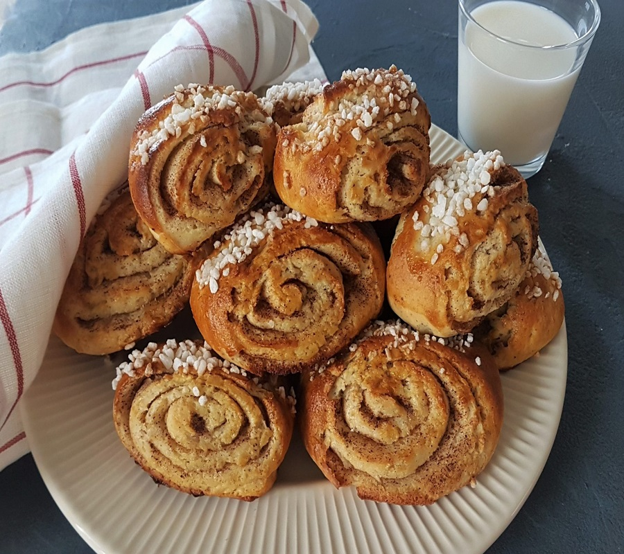
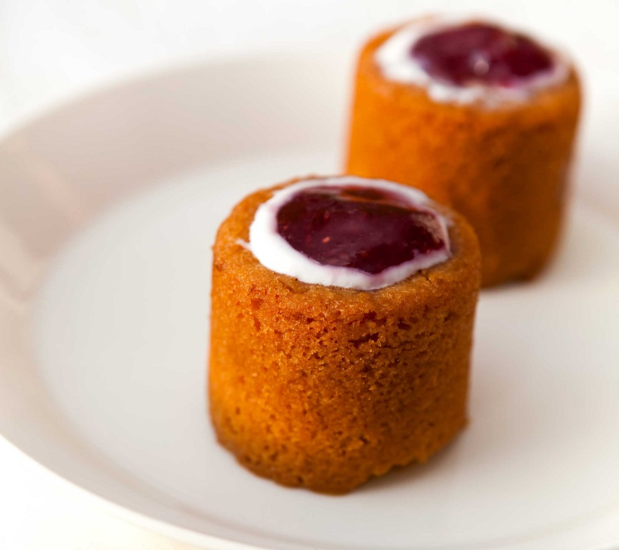
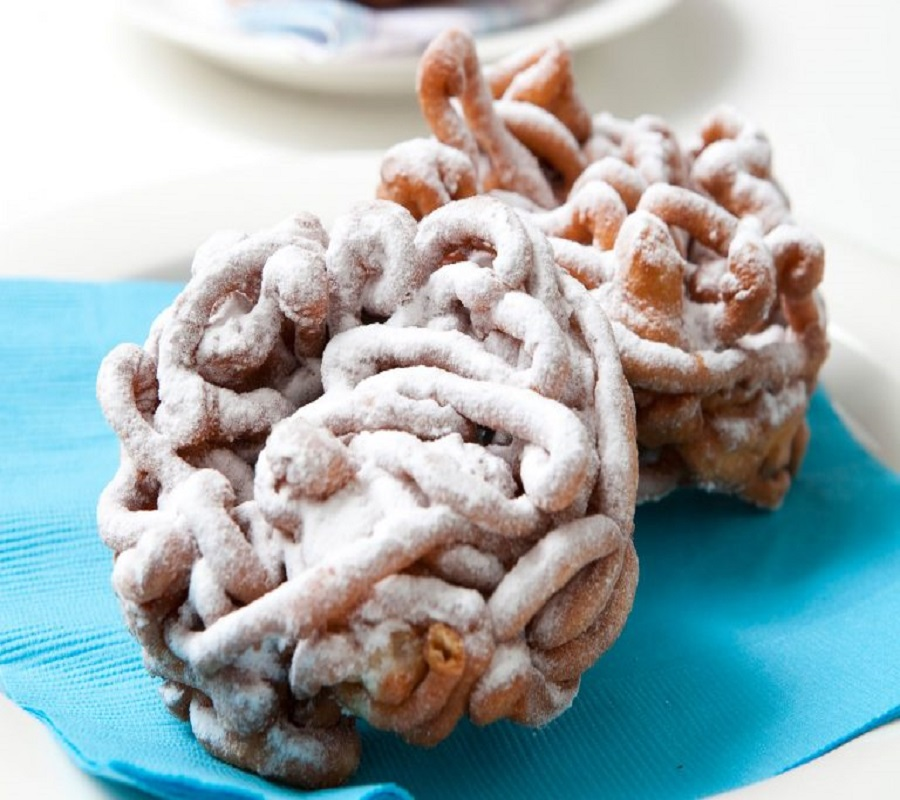

MainPage
Mexico
Italy
Japan
Finnish Cuisine
Finnish cuisine is known for its use of fresh, seasonal ingredients, such as berries, root vegetables, and fish. Popular dishes include fish soup, meatballs, and a type of rye bread called "ruisleipä."

Lihapullat Copyright: © Shutterstock

Hernekeitto Copyright: © parantavaruok

Kaalikäärylee Copyright: ©SpendWithPennies

Kaalikäärylee Copyright: ©SpendWithPennies
Traditional Finnish Dishes
Lihapullat: meatballs served with mashed potatoes and lingonberry jam
Karjalanpiirakka: a type of rye crust pastry filled with rice porridge
Hernekeitto: a hearty soup made with split peas and vegetables
Graavilohi:consisting of salmon that is cured using a mix of salt and sugar
Famous Finnish Desserts
Mämmi: a dessert made from dark rye flour, typically served during Easter
Korvapuusti: a sweet roll filled with cinnamon and sugar
Runebergintorttu: a small tart flavored with almonds and rum, traditionally eaten on Runeberg's Day (January 5th)
Tippaleipä: prepared with a thin egg batter that is deep-fried in sizzling oil.
Mämmi Copyright: © Kotikokki

Korvapuusti Copyright: © himoleipuri

Runebergintorttu Copyright: ©Anna

Tippaleipä Copyright: ©Sunnuntai